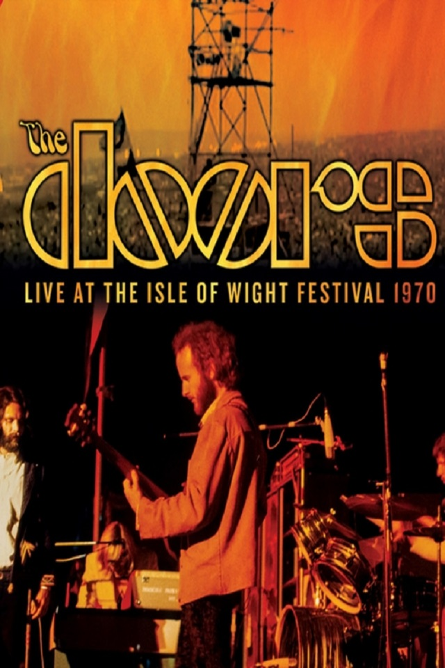

ü§ò Iron Maiden √© uma banda inglesa de heavy metal formada em Leyton, East London, em 1975 pelo baixista e compositor Steve Harris.
ü§ò Led Zeppelin foi uma banda brit√¢nica de rock formada em Londres, em 1968. Seu som pesado e violento de guitarra, enraizado no blues e m√∫sica psicod√©lica de seus dois primeiros √°lbuns, √© frequentemente reconhecido como um dos fundadores do heavy metal.
ü§ò Metallica √© uma banda norte-americana de heavy metal origin√°ria de Los Angeles, mas com base em San Francisco. O seu repert√≥rio inclui tempos r√°pidos, pesados, mel√≥dicos, instrumentais e musicalidade agressiva, a qual os colocou no lugar de pioneiros do thrash metal e uma das bandas fundadoras do Big Four of Thrash.
ü§ò Nirvana foi uma banda norte-americana de grunge e rock alternativo formada pelo vocalista e guitarrista Kurt Cobain e pelo baixista Krist Novoselic em Aberdeen no ano de 1987,[1] que obteve grande sucesso no movimento grunge de Seattle no in√≠cio dos anos 1990.

ü§ò Pink Floyd foi uma banda brit√¢nica de rock formada em Londres em 1965. Ganhando seguidores como um grupo de rock psicod√©lico, eles se destacaram por suas composi√ß√µes longas, pela experimenta√ß√£o sonora, pelas letras filos√≥ficas.
ü§ò Queen foi uma banda brit√¢nica de rock, fundada em 1970 e ativa, sob sua forma√ß√£o cl√°ssica, at√© 1991. √â frequentemente citado como um dos expoentes do seu estilo, tamb√©m sendo um dos recordistas de vendas de discos a n√≠vel mundial
ü§ò Arctic Monkeys √© uma banda brit√¢nica de rock formada em 2002 nos sub√∫rbios da cidade de Sheffield, na Inglaterra.

ü§ò Black Sabbath foi uma banda de heavy metal brit√¢nica formada no ano de 1968 em Birmingham pelo guitarrista e principal compositor Tony Iommi, o baixista e principal letrista Geezer Butler, o vocalista Ozzy Osbourne e o baterista Bill Ward
ü§ò Slayer foi uma banda norte-americana de thrash metal proveniente de Huntington Park, Calif√≥rnia, formada em 1981 pelos guitarristas Jeff Hanneman e Kerry King.[1] Slayer ganhou notoriedade a partir de 1986, com o √°lbum Reign in Blood
ü§ò Slipknot √© uma banda norte-americana de metal[1] formada em Des Moines, Iowa, em 1995. Seu estilo musical √© o nu metal, que explodiu no fim dos anos 1990 nos Estados Unidos, a banda √© conhecida por seu grande n√∫mero de integrantes, pelas m√°scaras usadas por cada um, e pelos shows en√©rgicos, o que garantiu um n√∫mero grande de f√£s jovens at√© os dias atuais
ü§ò Kiss √© uma banda de hard rock dos Estados Unidos, formada em Nova Iorque em 1973 por Paul Stanley e Gene Simmons. Conhecida mundialmente por suas maquiagens, e por seus concertos que incluem guitarras esfuma√ßantes, cuspir fogo e sangue, pirotecnias e outros efeitos.

ü§ò The Doors foi uma banda de rock norte-americana, fundada em 1965, em Los Angeles, Calif√≥rnia.
ü§ò The Beatles foi uma banda de rock brit√¢nica formada em 1960 na cidade de Liverpool. Formada por John Lennon, Paul McCartney, George Harrison e Ringo Starr, √© considerada a banda mais influente de todos os tempos. O grupo fez parte do desenvolvimento da contracultura da d√©cada de 1960 e do reconhecimento da m√∫sica popular como forma de arte
ü§ò Scorpions √© uma banda de rock origin√°ria de Han√¥ver, Alemanha fundada em 1965 pelos irm√£os e guitarristas Michael Schenker e Rudolf Schenker, sendo a primeira banda de hard rock formada no pa√≠s germ√¢nico.
ü§ò The Rolling Stones √© uma banda de rock brit√¢nica formada em Londres no ano de 1962, considerada um dos maiores, mais antigos e mais bem sucedidos grupos musicais de todos os tempos. Ao lado dos Beatles, s√£o considerados a banda mais importante da chamada Invas√£o Brit√¢nica ocorrida nos anos 1960.
@copyright 2022 Huesller, Inc.